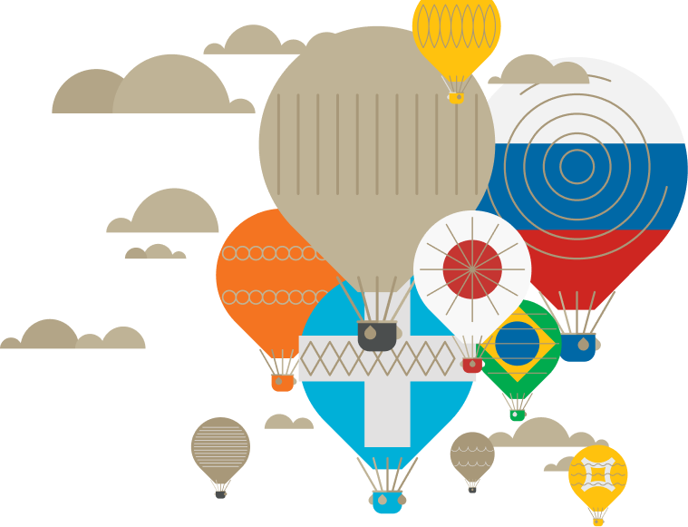
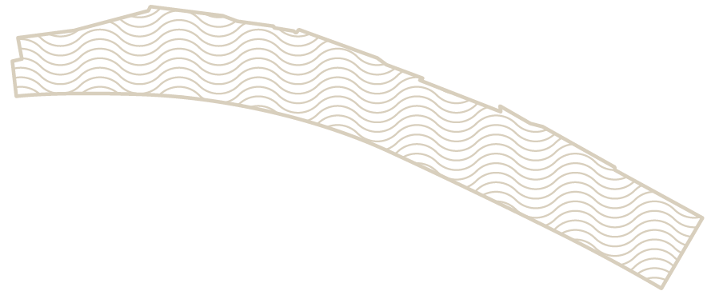
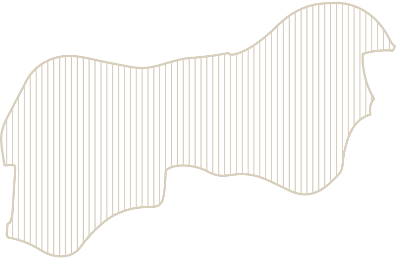
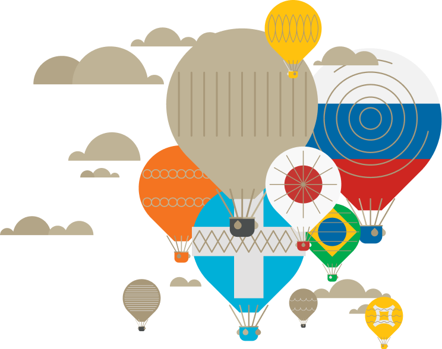

вас ждут
5 удивительных
стран
5 удивительных
стран
Божественная Греция
| 9:30-10:00 | звучание арфы |
| 9:30-9.45 . 15:00-15:20 | театрально хореографическое представление |
| 9:45-10:00 | театральное представление «Дары богов» |
| 10:00-10:15 . 15:20-15:50 | встреча с нимфами и Дионисом |
| 10:15-10:30 . 15:50-16:10 | встреча с посейдоном |
| 10:30-10:45 | представление «Божественное сотворение МРИИ» |
| 10:45-11:00 . 16:10-16:40 | встреча с Посейдоном и Русалками |
| 11:00-11:15 . 16:40-17:00 | cпор Афины и Афродиты |
| 11:15-11:30 | театрализированное представление «Божественные расприи» |
| 11:30-12:00 . 17:00-17:30 | встреча с Посейдоном, Дионисом, Афиной и Афродитеой |
В амфитеатре перед вами развернутся легендарные события Древней Греции, ставшие основой многих мифов. Полное погружение в захватывающее и прекрасное действо, звуки афры и фото с крылатыми Амурами - это все для вас.
Не забудьте паспорт! Аниматоры поставят отметку
о вашем визите в страну
о вашем визите в страну
Цветущая Япония
| 9:15-12:15 | звучание бамбуковой флейты |
| 15:15-18:00 | |
| 9:30-9:50 . 10:10-10:30 | выступление мастеров боевых искусств |
| 10:50-11:20 . 11:40-12:00 | |
| 9:30-12:30 . 15:00-18:00 | театральная прогулка с гейшами |
| 9:30-12:30 . 15:00-18:00 | мастер класс по японской каллиграфии |
| 15:00-15:20 . 15:40-16:00 | выступление мастеров боевых искусств |
| 16:20-16:40 . 17:00-17:30 |
Япония встретила нового императора и «Эру Рейва», что в переводе означает «порядок»,«гармония» и «цветущий мир». Ждем вас на умиротворяющую прогулку по японскому саду и чаепитие под звуки волшебной музыки
Не забудьте паспорт! Аниматоры поставят отметку
о вашем визите в страну
о вашем визите в страну
Зажигательная Бразилия.
| 9:30-10:00 . 15:00-15:30 | торжественное шествие с барабанами |
| 10:00-10:30 . 15:30-16:00 | танцевальный мастер класс |
| 11:30-12:00 . 17:00-17:30 | карнавальное шествие |
| 9:40-10:00 . 11:10-11:30 | выступление мастеров капоэйра |
| 15:40-16:00 . 17:10-17:30 | |
| 10:30-11:00 . 16:00-16:30 | бразильские ритмы от Laz Vegaz |
Отдайтесь зажигательным бразильским ритмам и закружитесь в танце под жарким солнцем. Танцоры и музыканты создадут для вас неповторимую атмосферу карнавальнного шествия и помогут освоить ключевые танцевальные элементы. Прирожденные танцоры капоэйра удивят своим мастерством и подарят яркое зрелище 
Не забудьте паспорт! Аниматоры поставят отметку
о вашем визите в страну
о вашем визите в страну
Загадочный Дримвуд.
| 12:00-15:00 . 16:00-19:00 | театральное цирковое шоу. мастер-классы |
Многие наслышаны о Дримвуде, но лишь единицы знают, как туда попасть. Эта загадочная страна скрыта со всех карт мира, за исключением одной - карты MRIYAUNI-VERSE. Спешите навстречу тайнам и сказочным приключениям!
Не забудьте паспорт! Аниматоры поставят отметку
о вашем визите в страну
о вашем визите в страну
Великая Россия.
| 18:00-22:00 | звездная вечерняя программа розыгрыш призов, фейрверки |
Заключительные события праздничного дня произойдут у центрального бассейна. Не пропустите головокружительный бал, катание на лодочках, праздничный торт, салют и выступление любимых российских артистов - Нюши и Сергея Лазарева.
Не забудьте паспорт! Аниматоры поставят отметку
о вашем визите в страну
о вашем визите в страну

Гарантированный подарок за 5 отметок в паспорте юного путешественника!
Маленькие путешественники, посетившие все пять стран, могут в течении дня получить приз в лобби отеля. пожалуйста, не забывайте на каждой площадке обращаться к аниматорам для проставления отметки в паспорте.
Все взрослые путешественники
участвуют в розыгрыше пяти ценных
призов!
участвуют в розыгрыше пяти ценных
призов!
Каждый посадочный талон имеет уникальный номер. Он-то и может принести победу в розыгрыше ценных призов! Для участьия в лотерее передайте свой посадочнй талон аниматору, который находиться у входа в центральный бассейн.